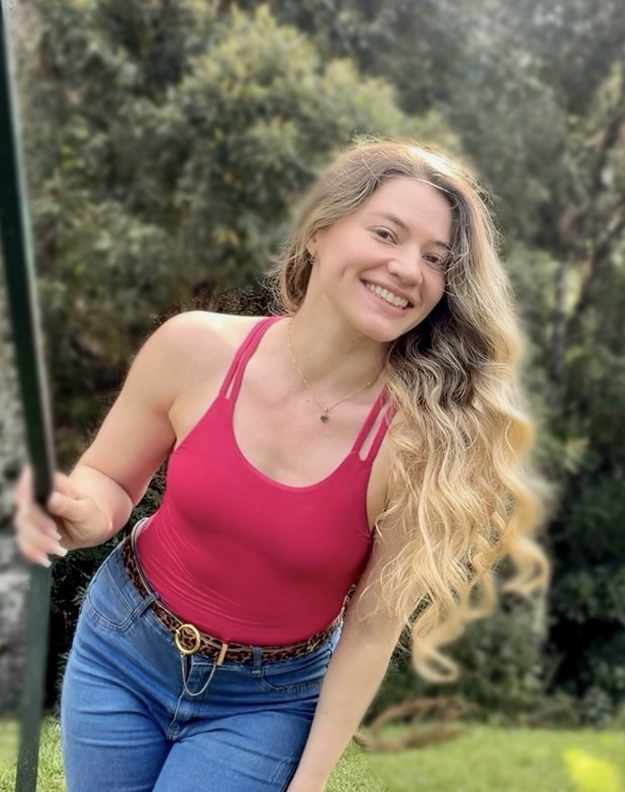

olá, eu sou aEmellyn Cracco
Eu crio vídeos e fotos que parecem recomendação de amiga, para marcas de beleza, skincare, moda, fitness e tech venderem com verdade.

foto da creator 4:5
Conteúdo feito com carinho e estratégia
Oi, eu sou a Emellyn. Moro em Curitiba, tenho a câmera sempre por perto e adoro o momento em que um produto encontra a história certa. Gravo vídeos UGC que não parecem propaganda, parecem conversa: luz natural, fala espontânea e aquele detalhe que faz alguém parar de rolar o feed.
Trabalho em parceria com a sua marca do briefing ao arquivo final, cuidando de roteiro, gravação, edição e legenda. Você recebe conteúdo pronto para publicar, no formato que o seu time precisa.
- ❤Roteiro aprovado antes de gravar, para você não ter surpresa.
- ❤Uma rodada de ajuste inclusa em todo conteúdo entregue.
- ❤Entrega em até 72 horas úteis depois da gravação.
Emellyn Cracco
Os vídeos que mais encantaram
Três conteúdos que mostram o meu jeito de gravar: começo que prende, meio que explica e final que convida a comprar.
Escolha um nicho e veja de pertinho
Cada nicho pede um tom diferente de fala, de luz e de ritmo. Filtre abaixo para ver como eu adapto o conteúdo.
Ainda não tenho trabalhos publicados neste nicho.
Formatos que eu entrego para você
Pode contratar um formato só ou montar um combinado. Me conte o objetivo da campanha que eu sugiro o caminho.
Resultados que falam por mim
Dados das entregas, resultados de campanha e o que as marcas dizem depois de trabalhar comigo.
resultados de campanha
o que as marcas dizem
Me conta a sua próxima campanha
Respondo em até 24 horas úteis com ideias, prazos e valores para o seu briefing.
Prefere falar direto?
Estou em Curitiba e atendo marcas de todo o Brasil, com envio de produto por correio.